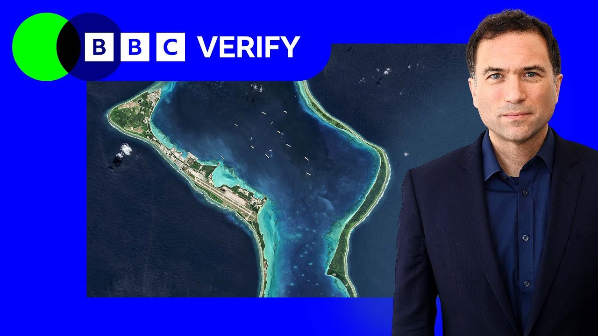

【英国和毛里求斯之间的查戈斯群岛协议是什么？| BBC新闻】
Summary: The UK and Mauritius have reached a deal on the Chagos Islands, transferring sovereignty to Mauritius while maintaining a US military base on Diego Garcia under a 99-year lease.
摘要： 英国和毛里求斯就查戈斯群岛达成协议，将主权移交给毛里求斯，同时以99年租约保留美国在迪戈加西亚岛的军事基地。

⏱️ Estimated Reading Time: 12 min
The Chagos Islands form an archipelago in the Indian Ocean.
查戈斯群岛是印度洋上的一个群岛。
They've been controlled by the UK for decades and they host a secretive US military base.
它们被英国控制了数十年，并设有一个隐秘的美国军事基地。
Now there's a new deal concerning the islands.
现在有一项关于这些岛屿的新协议。
A last minute challenge delayed it, but in the end it was done.
最后一刻的挑战推迟了协议，但最终完成了。
The base is staying.
基地将保留。
But the UK's ceding sovereignty of the islands to Mauritius.
但英国将岛屿的主权移交给毛里求斯。
Its prime minister has called it a great victory for the Mauritian nation.
毛里求斯总理称这是毛里求斯民族的伟大胜利。
And Keir Starmer has made this case.
基尔·斯塔默提出了这一主张。
By agreeing to this deal now on our terms, we're securing strong protections, including from malign influence that will allow the base to operate well into the next century.
按照我们的条款同意这项协议，我们确保了强有力的保护，包括免受恶意影响，使基地能够顺利运作到下个世纪。
The Chagos Islands matter a great deal to the UK, to the US, to Mauritius, and of course to Chagossians.
查戈斯群岛对英国、美国、毛里求斯以及查戈斯人来说都非常重要。
It's a complicated story which reaches back years.
这是一个可以追溯到多年前的复杂故事。
The islands are in the middle of the Indian Ocean, 1600 km from the nearest land mass.
这些岛屿位于印度洋中部，距离最近的陆地1600公里。
They had been part of Mauritius when it was a British colony, but that changed before Mauritius gained independence in the late 1960s.
在毛里求斯还是英国殖民地时，它们是毛里求斯的一部分，但在20世纪60年代末毛里求斯独立前发生了变化。
The United Kingdom withheld the Chagos Islands.
英国保留了查戈斯群岛。
It detached them from the colony of Mauritius and held on to them.
它将它们从毛里求斯殖民地分离并继续控制。
It renamed them the British Indian Ocean Territory.
它将其更名为英属印度洋领地。
As part of this, in 1965, the UK paid Mauritius £3 million.
作为协议的一部分，1965年英国向毛里求斯支付了300万英镑。
But Mauritius would later argue the agreement amounted to coercion and duress and that Britain as the colonial power had unreasonable leverage.
但毛里求斯后来辩称该协议等同于胁迫和压力，英国作为殖民国家拥有不合理的杠杆。
And there are insights into how the British saw the islands and their people.
还有一些关于英国如何看待这些岛屿及其人民的见解。
A foreign office memo from 1966 states the ambition to get some rocks which will remain ours, adding there will be no indigenous population except seagulls.
1966年的一份外交部备忘录称，目标是获得一些“永远属于我们的岩石”，并补充说除了海鸥不会有原住民。
In 1967, a year ahead of Mauritius becoming independent, Britain began the forced removal of the population of the Chagos Islands.
1967年，在毛里求斯独立前一年，英国开始强制驱逐查戈斯群岛的居民。
Over a thousand people were sent to the Seychelles to Mauritius and later to the UK.
一千多人被送往塞舌尔、毛里求斯，后来又被送往英国。
Human rights watchers called these expulsions a crime against humanity.
人权观察者称这些驱逐是反人类罪。
And one Chagossian born in exile in Mauritius describes what happened this way.
一位出生在毛里求斯流亡中的查戈斯人这样描述发生的事情。
Our people were sacrificed for Mauritius's independence, for this military base, for the defense purpose of the West.
我们的人民被牺牲了，为了毛里求斯的独立，为了这个军事基地，为了西方的防御目的。
What about us?
我们呢？
What do we gain in return?
我们得到了什么回报？
A life in exile.
流亡的生活。
On multiple occasions, the UK has publicly expressed regret for the expulsions.
英国多次公开对驱逐表示遗憾。
But documents leaked to the Guardian offer further insight.
但泄露给《卫报》的文件提供了更多内幕。
Notes taken by a US official show that in 2009, a senior UK foreign office official said, "We do not regret the removal of the population since removal was necessary for the British Indian Ocean Territory to fulfill its strategic purpose."
一位美国官员的记录显示，2009年，一位英国外交部高级官员表示：“我们不后悔驱逐居民，因为驱逐对于英属印度洋领地实现其战略目的是必要的。”
The British Indian Ocean Territory, remember, was how the British had renamed the islands.
记住，英属印度洋领地是英国对这些岛屿的重新命名。
And that strategic purpose that was referenced there is primarily about one of the Chagos Islands, Diego Garcia.
那里提到的战略目的主要是关于查戈斯群岛之一的迪戈加西亚岛。
In 1966, Britain had leased the island to the US in order for a military base to be built.
1966年，英国将该岛租给美国以建造军事基地。
The base would grow to accommodate up to 5,000 personnel.
该基地后来扩大到可容纳5000名人员。
And because of its shape, the Americans labeled it the footprint of freedom.
由于其形状，美国人称其为“自由的足迹”。
Though freedom doesn't extend to being allowed to visit.
尽管自由并不包括允许访问。
It's one of the most secretive US military facilities in the world.
它是世界上最隐秘的美国军事设施之一。
And this facility matters so much because of its location.
这个设施之所以如此重要是因为它的位置。
The nearest British military base is in Oman, over 3 and a half thousand kilometers away.
最近的英国军事基地在阿曼，距离超过3500公里。
The nearest US base is in Bahrain, nearly 5,000 km away.
最近的美国基地在巴林，距离近5000公里。
Diego Garcia gives both countries access to a base in a part of the world where they don't have another one.
迪戈加西亚岛为两国提供了一个在世界其他地区没有的基地。
If US or UK forces are operating in the area, it's pretty much the only option that they have got for support.
如果美国或英国军队在该地区行动，这几乎是他们唯一的支援选择。
It has both an airfield and naval facilities, a deep water harbor.
它既有机场又有海军设施，还有一个深水港。
That's why the Chagos Islands are so strategically important.
这就是为什么查戈斯群岛在战略上如此重要。
But the UK's actions on Diego Garcia in particular have come under sustained pressure for years.
但多年来，英国在迪戈加西亚岛的行动一直受到持续压力。
In 2019, the UN's highest court, the International Court of Justice, called Britain's position unlawful.
2019年，联合国最高法庭国际法院称英国的立场是非法的。
At the hearings, the UK admitted that its expulsion and treatment of Chagossians was shameful and wrong.
在听证会上，英国承认其对查戈斯人的驱逐和对待是可耻且错误的。
And in the same year, the UN General Assembly voted overwhelmingly in favor of the UK ceding the sovereignty of the islands.
同年，联合国大会以压倒性多数投票支持英国移交岛屿主权。
Mauritius wants to achieve the full decolonization of its sovereign territory and the rest of the world, most of it backs Mauritius in that demand.
毛里求斯希望实现其主权领土的完全非殖民化，世界上大多数国家支持毛里求斯的这一要求。
In 2022, the UK decided to act.
2022年，英国决定采取行动。
Then Prime Minister Rishi Sunak announced his government would start talks about ceding control of the islands.
时任首相里希·苏纳克宣布其政府将开始谈判移交岛屿控制权。
With this new deal, the Labour government of Keir Starmer has now completed that process.
通过这项新协议，基尔·斯塔默的工党政府现已完成这一进程。
As well as the UK ceding sovereignty of the islands to Mauritius for Chagossians, a resettlement program to all islands except Diego Garcia will be allowed.
除了英国将岛屿主权移交给毛里求斯外，查戈斯人将被允许重新定居除迪戈加西亚岛以外的所有岛屿。
There will also be a fund for Chagossians who were expelled.
还将为被驱逐的查戈斯人设立一项基金。
And there's one more crucial aspect to the deal.
协议还有一个关键方面。
The UK will take a 99-year lease over Diego Garcia.
英国将获得迪戈加西亚岛99年的租约。
That means the base stays.
这意味着基地将保留。
The cost of this lease will be 101 million pounds a year.
这项租约的费用为每年1.01亿英镑。
And the deal isn't without its critics.
这项协议并非没有批评者。
We should not be paying to surrender British territory to Mauritius.
我们不应该花钱将英国领土交给毛里求斯。
The fact that Labour's negotiating something that sees the British taxpayer in hock for potential billions is completely wrong.
工党谈判的内容可能让英国纳税人背负数十亿债务，这是完全错误的。
We've also heard concerns from some of those displaced in the 1960s along with their descendants.
我们还听到了一些20世纪60年代被驱逐者及其后代的担忧。
They say they haven't been properly consulted.
他们说他们没有获得充分的协商。
To this, the foreign office says the interests of the Chagossian community has been an important part of the negotiations, but several Chagossians speaking to the BBC say that isn't the case.
对此，外交部表示查戈斯社区的利益一直是谈判的重要组成部分，但几位接受BBC采访的查戈斯人表示事实并非如此。
Every time we made a request to be heard, we have been excluded was one allegation.
“每次我们要求被听取意见，都被排除在外”是一项指控。
Also, the deal was temporarily halted by an injunction brought by Chagossian campaigners who want a right to return to live on the islands that includes Diego Garcia.
此外，该协议因查戈斯活动人士的禁令而暂时中止，他们希望获得返回包括迪戈加西亚岛在内的岛屿居住的权利。
The rights we asking for now, we've been fighting for for 60 years.
我们现在要求的权利，我们已经争取了60年。
Mauritius is not going to give that to us.
毛里求斯不会给我们这些权利。
So, we need to keep fighting with the British government to listen to us.
所以，我们需要继续与英国政府斗争，让他们听取我们的意见。
This is one perspective others have welcomed the deal.
这是一种观点，其他人则欢迎这项协议。
Chagossians do not speak with one voice on what should happen.
查戈斯人对应该发生什么并没有统一的声音。
But for now, this deal is done.
但目前，这项协议已经完成。
And there's another country we need to talk about, too.
还有另一个国家我们也需要谈谈。
China.
中国。
It's a long way to the east of the islands, but it's an ally and trading partner of Mauritius.
它位于岛屿以东很远的地方，但它是毛里求斯的盟友和贸易伙伴。
It's also a global rival to the US, and just like the US, it's looking for opportunities to establish its military presence.
它也是美国的全球竞争对手，和美国一样，它正在寻找建立军事存在的机会。
The UK argues this is another reason the deal needed to be completed.
英国认为这是需要完成协议的另一个原因。
If we did not agree this deal, the legal situation would mean that we would not be able to prevent China or any other nation setting up their own bases on the outer islands.
如果我们不同意这项协议，法律情况将意味着我们无法阻止中国或其他国家在外岛建立自己的基地。
And it appears the US is certainly glad of this deal.
而美国显然对这项协议感到高兴。
Secretary of State Marco Rubio has called it a historic agreement.
国务卿马可·卢比奥称其为一项历史性协议。
And no doubt this is a significant moment.
毫无疑问，这是一个重要时刻。
But it's not the end of the story because this deal extends US and UK military involvement on Diego Garcia and it extends the debate about the Chagos Islands past and their future.
但这并不是故事的结束，因为这项协议延长了美国和英国在迪戈加西亚岛的军事参与，并延长了关于查戈斯群岛过去和未来的辩论。